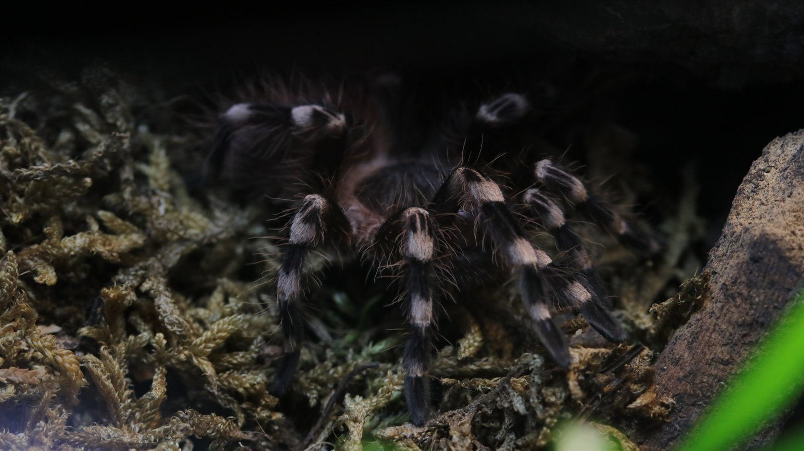

A large terrestrial tarantula from Brazil. Females and juveniles use ground-level shelter and tubular retreats beneath natural cover, with much activity taking place after dark.
Species profile · Current resident
Acanthoscurria geniculata
Brazilian white-knee tarantula
A large, ground-dwelling Brazilian tarantula with bold pale knee bands. This profile brings published natural history together with photographs and keeper records from Alma, the individual currently in my care.

Accepted name
Acanthoscurria geniculata
Family
Theraphosidae
Documented range
Brazil
Natural history
Terrestrial · burrow-associated
Sex
Confirmed female
In the wild
Natural history.
Bold pale bands break across the dark legs, while warm hairs surround the carapace. The contrasting pattern explains the familiar Brazilian white-knee name.
Alma has deep substrate, an accessible retreat, water, and room to move at ground level. Her personal feeding and time-in-care statistics are shown separately below.
Taxonomy and range
The World Spider Catalog recognises Acanthoscurria geniculata (C. L. Koch, 1841) as an accepted species in the family Theraphosidae and records its distribution as Brazil. A 2014 revision placed the former name Acanthoscurria transamazonica in synonymy with it.
Burrows, shelter, and activity
Published field context places the species mainly in the Amazon of northern Brazil. It is described as predominantly nocturnal, while females and juveniles use tubular burrows at ground level beneath rocks and fallen logs, within living trees, and in ravines.
Feeding ecology
Like other large terrestrial spiders, it is an opportunistic predator. One 2024 field note documented an adult female taking a juvenile common lancehead close to the entrance of a burrow. That unusual record broadens what is known about its wild diet; it is not a feeding recommendation for animals in captivity.
In my care
Meet Alma.
Alma is the current Introvertebrates representative for this species. Her photographs show why the common name is so immediate: pale bands break across dark legs, while warm hairs around the carapace become especially vivid at close range.



From Instagram
Posts & reels.
From the channel
Related viewing.
Introvertebrates on YouTube
Why tarantulas make great pets
This is a broader Introvertebrates video about keeping tarantulas. The channel does not yet have an Alma-specific video, so this is presented as related viewing rather than footage of her.
Personal observations
From the Codex.
Introvertebrates Codex
Alma’s keeper record
This section is designed for privacy-safe summaries from the Introvertebrates Codex: molt history, confirmed feeding outcomes, commonly accepted prey, measurements, and time in care. These are observations of one animal, not species-wide averages.
The profile is ready for a privacy-reviewed Codex export. Until that is supplied, no personal log data or invented statistics are shown.
Never published here: raw notes, record IDs, seller or breeder details, enclosure identifiers, local file paths, or exact private event dates.
Continue exploring
Related profiles.


Read further
Sources.
- World Spider Catalog Accepted name, family, distribution, and taxonomic references for Acanthoscurria geniculata. View the catalog record.
- Cunha, Brescovit & Costa-Campos (2024) Natural-history context and a documented predation event in the Brazilian Amazon. Read the open-access paper.
- Pechmann (2020) Laboratory husbandry context, development, size context, and defensive use of urticating hairs. Read the open-access paper.
- McAnena, Murphy & O’Connor (2013) Clinical case report describing eye injury associated with tarantula urticating hairs. View the PubMed record.